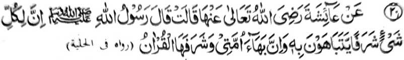

Hadith - 20

Miyakathitayan ko A’isha (Radhiallaho Anha) a pitharo iyan a pitharo o Rasulollah (Sallallaho 'Alaihi Wasallam), “Matawan a si-i ko omani nganin na aden a mapiya-on a ipephangandag sekaniyan, na mata-an a aya pangandag o manga Ummat aken na so Qur'an. "
So manga tao na pephaki-ilay ran so kaporo irani daradat ago bantogan niran misabap ko bangensa iran, go so kadakel iran a mbata-bata-a ago so manga ped san a sabap. So Qur’an na aya kasasabapan ko kaporo ago pangandag o Ummat sabap sa so kapangadi iron, so kabatiya-aon, so kipangenda-o non, go so kinggolalanen non, so katimbel iyan na langon a mitotompokon, na pekhabegan niyan siran sa bantogan. Anda manaya-i di niyan kebebenar? Sekaniyan na Katharo o Pekhababaya-an ago Sogo-an o Datu. So daradat iyan na kao-ombawan niyan so langon o bantogan ko donya apiya-i kala iyan. So kakawasa-an sangka-iya donya, apiya-i kala iyan na, mathay maga-an, na khada, ogaid na so bantogan ago daradat o Qur’an na tani-tiyssa ago da katago-i sa tamana.
Giyabo angkoto a mababa ko manga sipat o Qur’an, na khapakay den a ipangandag, apiya giyabo angkoto a kapiya niyan ko manga ped a sarat, ibarat, o kapiya a kiyandiyator o basa niyan, so pakamemesa a kiyapaka-pagayon-ayon niyan, so kiyapento o titho a basa, so kiyasagogod o manga osayan, so totholan ko miya-ona a masa ago so dapen mitalingoma. So manga ongat-ongat iyan ko saba-ad a manga tao na diden khasangka, ibarat o katharo Iyan pantag ko manga Yahodi, a gi-i ran tharo-on so babaya iran ko Allah, ogaid na di ran bo mapezinganin so kapatay. So pephamamakineg na tanto a pekhaliwanagan ko kapembtaiya-aon ago so pembatiya na di phakagedam sa dokao ko kapembatiya iyan. Kalalayaman a apiya-i kapiya o katharo o di na sorat a pho-on ko pagida-an a ikabibira-i o tao, na pendokawan non bo matiya ko oriyan o ika dowa polo taon matiya opama ka da taon dokawi ko ika sapolo taon matiya, o di na dokawan ta bo ko oriyan o ika pat-polo taon matiya opama ka da taon dokawi ko oriyan o ika dowa-polo taon matiya. Ogaid na o aden a milangag ta a maito bo ko Qur’an, na khapakay a makadowa-gatos ta mabatiya o di na pat-gatos mabatiya na taman pen ko tenday o omor ta, na di ron den masemo so tao. O aden pen a makaren non ko babaya ta on (matiya) na di bo oto mathay. Aya mata-an na saden sa kathay a kapembatiya-a ko Qur’an, na kala angkoto a babaya ago kapipiya ginawa taon. Opama ka aden bo a pira timan sangkanan a mapiya sipat a mato-on ko salakao a kitab, na patot so kabantoga tano ron. Opama ka langon angka-iya miya-aloy a sipat na mato-on ko isa a kitab sa tarotop, na mata-an patot so kapagadati ron sa katago-i ron sa pithamanan a maporo a bantogan ago mala a pangandag.
Imanto, na ilayn tano so mambebetad tano. Pira reketano-i pekhagedam iyan so kasoso-at igira nrinilangag iyan so Qur’an langon. Ino ba so manga Huffaz na paga-adatan si-i bo ko pangilay-layan tano? Phamli-in! so bantogan tano ago so pangandag tano na si-i madadalem ko pangkatan a makapopo-on ko manga poporo a paganadan (university), si-i ko manga poporo a gerar, si-i ko kanggaya-gomaya ko donya ago so kapaki-ilay-lain, ago si-i ko pathamo-tamokan, a palaya tano den khibagak ko oriyan o kapatay. Ya Allah!, kalimo-n kami Ngka.